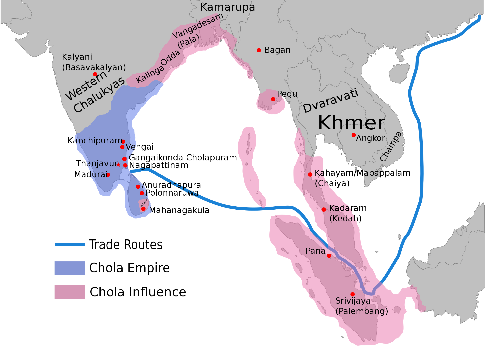

The Cholas became feudatories in Uraiyur after the decline of the Sangam Period.
Vijayalaya was the founder of the Chola dystany.
His son Adtiya and Parantaka I were the early Chola rulers. Their power reached at peak of glory under Rajaraja I and his son Rajendra I. Rajaraja I (985 - 1014 A.D) gave a severe defeat to Chera, Pandaya and Kalyani rulers and won the conquests of Gangavadi, Tadigaipadi and Nolambapadi located in Mysore region. He assumed many titles like Mummidi Chola, Jayankonda and Sivapadasekara. He built the famous Rajasrajeswara temple or Brihadeeswara temple at Tanjore in 1010 AD and also helped in the construction of a Buddhist monastery at Nagapattinam. Rajendra I (1012 - 1044 AD) conquered Bengal, Burma, Orissa and Andaman & Nikobar Islands. Rajendra I also acquired a number of titles like Mudikondan, Gangaikondan, Kadaram kondan and Pandit Cholan. He was also a staunch follower of Shiva and built a temple for shiva at the new capital Gangaikondacholapuram. Rajendra III was the last chola king who was defeated by Jatavarman Sundarapandaya II.
The king was at the top of admnistration whose authority is reveled by the big capital cities like Tanjore and Gangaikondacholapuram, the large royal courts and extensive grants to the temples. There was a vast administrative machinery comprising various officials called perundanam and Sirudanam.
The land revenue department under the Cholas was called as puravuvarithinaikkalam. Besides land revenue, there were tools and customs on goods taken from one place to another, various kinds of professional taxes, dues levied on ceremonical occasions like marriages amd judical fines. The residential portion of the village was called ur nattam. The main items of government expenditure were the king and his court,army and navy, roads irrigations tanks and cannals.
The Chola army was consisted of elephants, cavalry, infantry and navy. The royal troops of the Cholas were called kaikkola perumpadai. Within this there was a personal troop to defend the king known as velvaikkarar. Attention was given to the training of the army and the military Cantonments called kadgams existed.
The Cholas paid special attention to their navy also.
The Cholas Empire was divided into mandalams and each mandalam into valanadus and nadus. Mandalams were under the royal princes or officers valanadu was under periyanattar and nadu under nattar.
In each nadu, there were a number of autonomous villages. The town was known as nagaram and it was under the administration of council called nagarattar.
Two inscriptions belonging to the period of Parantaka I found at Uttiramerur provide details of the formation and functions of village councils. The village was divided into thirty wards and each was to nominate its members to the village council.
Socio-Economic Life: Caste system was widely prevalent during the Chola period Brahmins and kshatriyas enjoying special previliges. The inscriptions of the Chola rule mention two major divisons amongs the Castes - Valangai and Idangai Castes. Women's position didn't improve and the practice of 'sati' was prevalent among the royal families. The devadasi system or dancing girls attached to temple emerged during this period. The temples remained centers of economic activity during the Chola period
Both agriculture and industry florished. Silk weaving industry at kanchi also flourished. Commercial contacts between the Cholas empire and China, Sumatra, java and Arabis were extensively prevalent. Arabian horses are imported in large numbers to strengthen the cavalry.
Education and Literature: The inscrition at Ennayiram, Thirumukkudal and Thirubhuvanai provide details of the colleges existed in these places. Subjects like mathematics and medicine were taught in these institutions apart from the Vedas and Epics.
The Ramayana composed by Kamban and the Periyapuranam or Tiruttondarpuranam by Sekkilar are the two master pieces of the period. The Moovarula written by Ottakuthar depicts the life of the three Chola kings. The works on Tamil grammer like kalladam by Kallandanar, yapperungalam by Amirthasagarar, a jain, Nannual by Pavanandhi and Virasoliyam by Buddhamitra were the products of the Chola age.
Art and Architecture: The chief feature of the Chola temple is the Vimana. The big temple of Tanjore built by Rajaraja I is a masterpiece of South Indian art and Architecture. Another notable contribution of the Cholas is the Shiva temple at Gangaikondacholapuram built by Rajendra I. The Airavathesvara temple at Darasuram in Tanjore district and the Kampaharesvara temple at Tribhuvanam are examples of later Chola temples. The Chola paintings were also found on the walls of Narthamalai and Tanjore temples.
After Harshavardhana, the Rajputs emerged as the powerful force in Western and Central India. Out of the political disarray prevalent in North India the Rajputs chalked out the small kingdoms of Gujarat and Malwa. From the eighth to twelfth century they struggled to keep themselves independent. But as they grew bigger, the infightings made them brittle, they fell prey to the rising domination of the Muslim invaders. Among them the Gujara of Prathihara, the Gahadwals of Kanauh, the Kalachuris of Chedi, the Chauhans of Ajmer, the Solakis of Gujarat and the Guhilotas of Mewar are important.
Prithviraj Chauhan was a brave ruler over Delhi and Agra. Jai Chand Rathor was the last Rajput king who was defeated and killed by Mohammad Ghori. The kingdom of Delhi fell into Gauri.